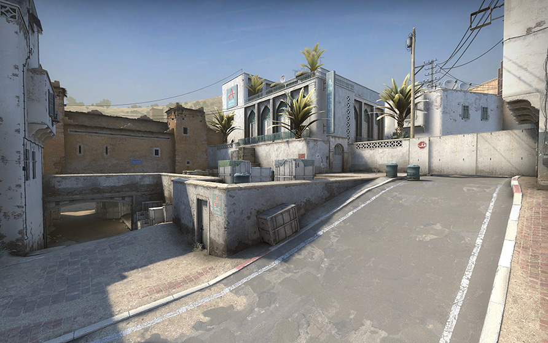
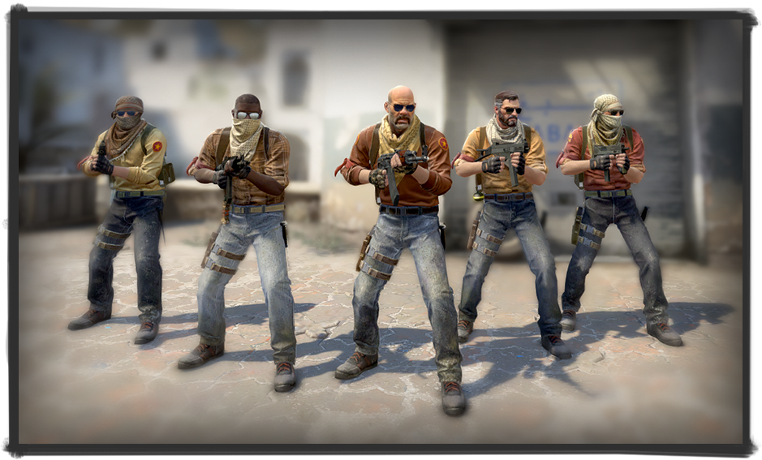

Several overly dark corners in the tunnels are now illuminated by the sun breaking through the collapsed ceiling. In addition, we moved the car wreck at the planting point a bit to make it easier for players to bypass it. The hole in the wall - the “window” - has been expanded, and it has also become easier to move around next to it. Scaffolding nearby has been simplified: metal pipes will no longer obscure your prey. Also changed the position of several pillars outside the point, making this area look neater, but not less legible.
A PLANT!: Hotel «AURORA»


To make it easier for players to navigate when entering the point, we removed the dark passages from the far wall. Peeping around corners has also become easier: there are no more annoying drainpipes.
Of the several skeletons of cars at point A, only one remained, and it became much easier to move around and on it. Now experienced players will not get stuck in the air, and beginners will not think that you can get burned on the car. We also replaced the unbearable fragments near the walls with much more predictable grass and stones - now you can safely walk on them.
MIDDLE
In the central section of the map, the illumination of the lower tunnels has improved, and now it is not so easy to watch for the enemy in the dark.
Here we also moved the dark passages, and eliminated the unpredictable cover at the door altogether. Now there are much fewer niches in the walls, so you don’t have to be distracted by trifles.
GRAPHIC
The gameplay of the map still does not get old, but it clearly would not hurt to bring fresh sand to it. Now the point of bookmark B is near the ancient kasbah under restoration, and point A huddles next to a bazaar and a hotel. Texture resolution has been quadrupled, and North African environment models are available to all mapmakers. But there is also bad news: two pizzerias are gone. But now in their place are dentists. Coincidence? We don't think.
AGENTS MODELS!

The notorious fighters of the "Elite Division", the classic baddies of this map (also known as the "Dura Cell"), received an update to match their new home. The resolution of their textures has increased, and the models themselves have become more recognizable, holistic and iconic; these hardened veterans of countless battles still strive to take over the world. You will also notice that some of them like to visit our new hairdresser.
LETS PLAY!
Over the years, Dust II has evolved into one of the most balanced and iconic maps in CS:GO.